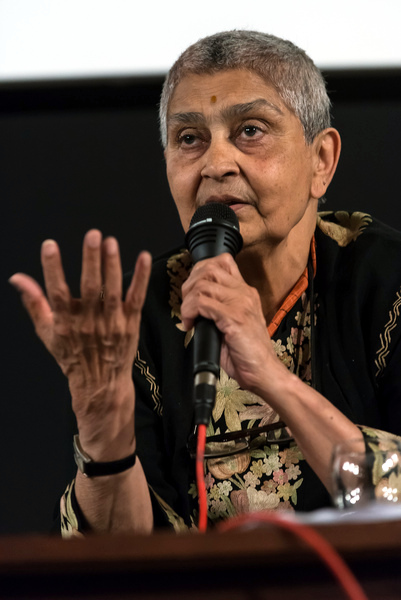
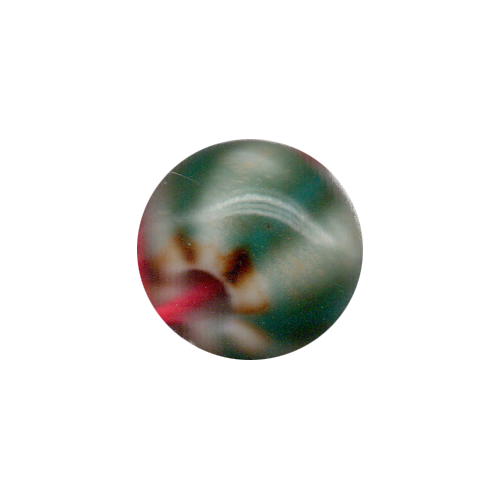

<!DOCTYPE html>
<html lang="kr"></html>
<head>
  <meta charset="UTF-8">
  <meta http-equiv="X-UA-compitable" content="IE-edge">
  <meta name="viewport" content="width=device-width", initial-scale="1.0">
  <title>n</title>
  <link href="n.css" rel="stylesheet">
  <script type="text/javascript">
    document.oncontextmenu = function(){return false;}
    function redirectToRandomPage() { 
            // Array of specific pages on the website 
            const pages = [ 
                'index6.html', 
                'index13.html', 
                'index20.html', 
                'index27.html' 
            ]; 
            // Generate a random index 
            const randomIndex = Math.floor(Math.random() * pages.length); 
            // Redirect to the randomly selected page 
            window.location.href = pages[randomIndex]; 
    }
  </script>
</head>
<body oncontextmenu="return false" onselectstart="return false" ondragstart="return false" onkeydown="return false">
  <div class="box-container">
      <div class="box-item1">
        <div class="map">
          <a onclick="redirectToRandomPage()">
            
          </a>
          <p style="color: white;">역사 속 사이보그적 여성</p>
          <div class="comment">
            <p style="color: white;">사이보그와 같이 존재만으로 어떤 경계를 흐리는 여성들이 있다. 경계를 흐리는 존재가 된 역사 속의 사이보그 여성들을 소개한다.</p>
          </div>
      </div>
    </div>
    <div class="box-item2">
      <div class="contents">
        
        <p class="name">잔 다르크 (?~1431)</p>
        <p class="text">잔 다르크는 백년전쟁에서 프랑스군을 승리로 이끈 영웅이자 로마가톨릭 교회의 성인이다. 당시 17세였던 잔은 프랑스를 구하라는 신의 계시를 들었다고 주장하며 프랑스의 왕세자 샤를 7세에게 자신이 그를 왕위에 올릴 수 있다고 설득했다. 잔은 샤를 7세의 시험을 통과하고 오를레앙 전투에 투입돼 프랑스군을 이끌었다. 오를레앙 전투에서 기적적인 승리를 만들어 낸 잔은 ‘오를레앙의 성녀’로 추앙받고 전쟁영웅으로서 많은 전투에 참전하게 된다.
        <br>잔 다르크는 성녀로서 권력을 잡고 군대를 이끌었으나 부르고뉴 파에 대한 샤를 7세와의 상반된 입장으로 대립하였고, 잉글랜드에 팔려가 종교재판을 받게 된다. 재판에서 그녀는 이단과 남장 혐의로 심문받았고, 남성복을 입고 전장에 섰다는 사실이 신의 사자를 ‘마녀’로 전락시키는 증거로 이용되었다. 1456년 항소심을 통해 판결이 뒤집히고 명예를 회복했지만 잔의 생애는 성녀 혹은 마녀의 이분법 속에서 기록될 뿐이었다.
        <br>남성복을 입고 남성들뿐인 전장에 깃발을 들고 선 잔 다르크는 보수적이던 중세의 젠더 질서에서 벗어난 인물이자 사이보그적 여성이었다. 잔 다르크는 프랑스에 기적을 일으킨 성녀 혹은 마녀로서의 단일한 시선에 갇히지 않는, 남성과 여성, 인간과 비인간의 경계를 횡단하는 존재로서 다시 읽힐 필요가 있다.</p>
        
        <p class="name">가야트리 차크라보르티 스피박 (1942~)</p>
        <p class="text">가야트리 차크라보르티 스피박은 인도의 사상가다. 그의 삶은 어느 한 가지 범주 정리할 수 없으며 그의 삶 관통하는 단 한 가지 줄기를 찾기란 불가능할 정도로 다원적이다. 1942년, 아직 영국의 식민 지배 하에 있던 인도에서 태어난 스피박은 인도인이라는 뿌리와 서구 제국의 식민지인이라는 뿌리를 모두 가지고 자란다. 스피박은 어느 한 곳으로도 속하려고 하지 않고, 오히려 당신은 이곳에 속하기 때문에 그렇게 행동해서는 안 된다는 재단에 정면으로 반박한다. 
        <br>스피박은 어떠한 존재가 타자로 재현되는 것을 거부한다.<span title="김은주, 『생각하는 여자는 괴물과 함께 잠을 잔다』, 서울: 봄알람, 2017, 42쪽."><sup>1&#41;</sup></span> 소설 『제인 에어』에 등장하는 인물, 버사 메이슨에 대한 스피박의 평가는 이러한 저항과 궤를 같이한다. 『제인 에어』에서 버사 메이슨은 로체스터의 첫 부인으로 등장하며, 원래 이름인 앙투아네트를 잃은 채 영국인 남편에 의해 버사라는 영국식 새 이름을 받아 살아간다. 그리고 이 설정은 앙투아네트라는 인물이 백인 남성에 의해 어떤 시선으로 재단되어 살아왔는지를 단적으로 드러낸다. 스피박은 『제인 에어』가 앙투아네트라는 크리올 여성을 ‘미친 여자’로 이름지어 그 서사 안으로 불러옴으로써 버사를 작품 속 백인 인물들의 내적 성장과 인격의 입체성을 위한 수단으로 사용될 뿐이며 ‘재현’되었을 뿐임을 점을 지적한다. 
        <br>서발턴에 대한 스피박의 연구 역시 마찬가지다. 서발턴은 본래 안토니오 그람시가 사회의 하층 계급을 가리키기 위해 사용한 용어이나, 엘리트 집단이 아닌 모든 인도인을 가리키는 말로 받아들여진다.<span title="진태원, 「’서발턴’은 정치 주체가 될 수 있는가?」, 『한겨레』, 2014.12.15."><sup>2&#41;</sup></span> 스피박은 ‘서발턴’의 존재 역시 서구중심의 관점 하에 ‘제3세계’라 불리는 존재들으로 재현되었으며, 그들의 진정한 목소리가 들릴 수 없는 현실을 파헤친다. 스피박은 이렇듯 경계 위에 놓인 다원적 생애를 바탕으로 그처럼 경계 위에 놓인 존재로서 타자화되는 이들의 목소리를 듣고자 한다.</p>
        
        <p class="name">도나 진 해러웨이 (1944~)</p>
        <p class="text">해러웨이는 미국의 생물학자이자 페미니즘 이론가로 생물학을 비롯해 자신이 공부하고 연구한 여러 분야에서의 지식을 여성주의, 그리고 그것 이상의 깨달음으로 이어간다. 그는 인문과학과 자연과학, 유기체와 기계의 구분을 비롯해 현재 우리 세계를 체계화하는 질서인 이분법과 이원론적인 사고애 대해 질문을 던진다. 
        <br>해러웨이는 우리가 이 웹을 만들어 사이보그적 여성에 대한 이야기와 생각들을 세상 밖으로 꺼내놓도록 영감을 준 결정적 인물이다. 이 웹의 제목인 “나는 여신보다는 사이보그가 되겠다”는 그의 텍스트 「사이보그 선언문(A Cyborg Manifesto)」에서 등장하는 한 문장이기도 하다. 해러웨이가 우리를 움직이도록 한 것는 그가 우리가 언어와 사회의 이분법에 대하여 가진 의문과 의심을 먼저 경험한 인물이기 때문이다. 그는 생물학 및 동물학 공부를 통해 생물이 가질 수 있는 여러 삶의 양태를 발견하며 개체성과 집단성에 대해 질문했으며, 공상 과학 소설과 사이보그를 비롯한 기술과학적 상상력과 변화들은 그에게 이원론을 허무는 새로운 세계의 이미지를 구축할 영감을 가져다 주었다. 
        <br>그는 이원론과 경계에 대해 질문하며 우리가 무언가에 대해 “객관적으로” 가지고 있다고 믿는 “지식”들이 객관적이기보다는 상황적이며 보편성보다는 외려 부분성을 가지며 한계를 가질 수밖에 없다고 이야기한다. 그는 자신 스스로도 무언가에 대해 영속적이고 객관적인 인식을 가질 수 없음을 알며 서로 다른 이들과의 “실뜨기 놀이와 같은 삶”을 통해 함께 존재함으로써 살아가는 삶의 이미지를 그린다.</p>
        
        <p class="name">생트 오를랑 (1947~)</p>
        <p class="text">성형수술 퍼포먼스인 &lt;성 오를랑의 환생The Reincarnation of St. Orlan&gt; 시리즈로 잘 알려져 있는 프랑스의 예술가 생트 오를랑은 자신의 신체를 예술의 매개로 삼아, 절개·보형물 삽입 등 의학적 시술을 퍼포먼스로 수행한다. 그는 이러한 과감한 행위를 통해 전통적 미의 기준과 고정된 인간 정체성의 개념을 전복하려 했다. 모든 여성들이 획일적인 미적 모델을 쫓아야 하는 사회적 강박을 비판하는 성형수술 시리즈는 여성의 해체와 다양성을 추구하는 페미니즘적 관점에서 이해될 수 있다.
        <br>오를랑의 작업 세계는 로봇, 인공지능(AI), 그리고 메타버스 영역으로 확장되며, 그 속에서 인간은 더 이상 관습과 규범에 구속된 ‘물리적 껍데기’에 머무르지 않는다. 대신 스스로 자신의 몸을 구성하고 확장할 수 있는 자율적 주체로 재탄생한다. 신기술을 통한 오를랑의 하이브리드는 순응을 거절하고 새로운 생명정치의 장을 연다.
        <br>그의 신체관은 전통적인 ‘인간의 몸’ 개념을 넘어, 기계와 인간이 융합한 사이보그적 신체를 떠올리게 한다. 오를랑이 상상하는 신기술은 단순한 기술 발전에 그치지 않고, 성별·인종·장애 여부와 무관하게 평등한 사회를 지향하며, 나아가 환경과의 조화를 중시하는 인간–비인간 공생의 가능성을 탐구한다. 이는 신체를 둘러싼 정치·사회·윤리적 질문을 예술의 전면으로 끌어올리는 그의 일관된 실천과도 맞닿아 있다.</p>
      </div>
    </div>
    <div class="box-item3">
      <a href="d6.html">
        </a>
        <span class="text1">d. 픽션 속<br>사이보그적 여성</span>
      <a href="h6.html">
        </a>
        <span class="text2">h. 논문 발췌</span>
      <a href="q6.html">
        </a>
        <span class="text3">q. 경계 위에<br>놓인 존재</span>
    </div>
  </div>
</body>